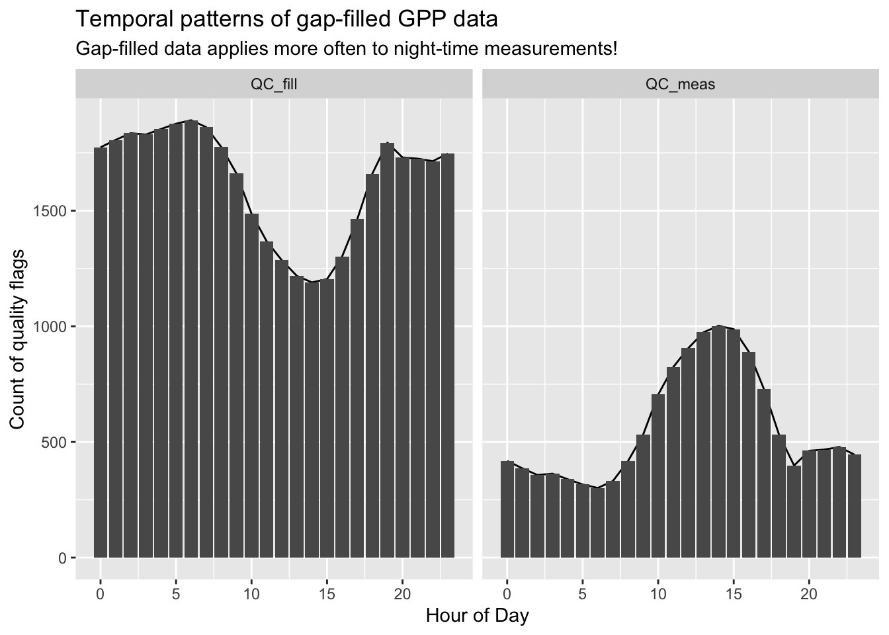
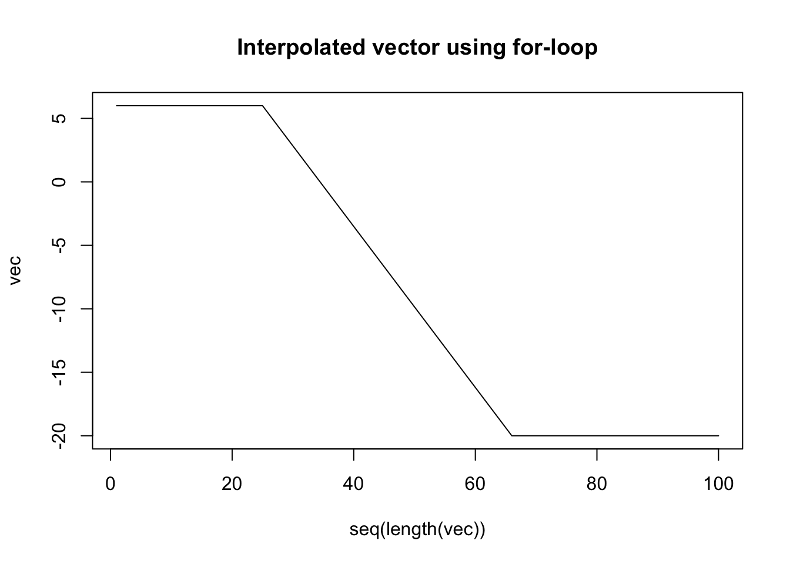
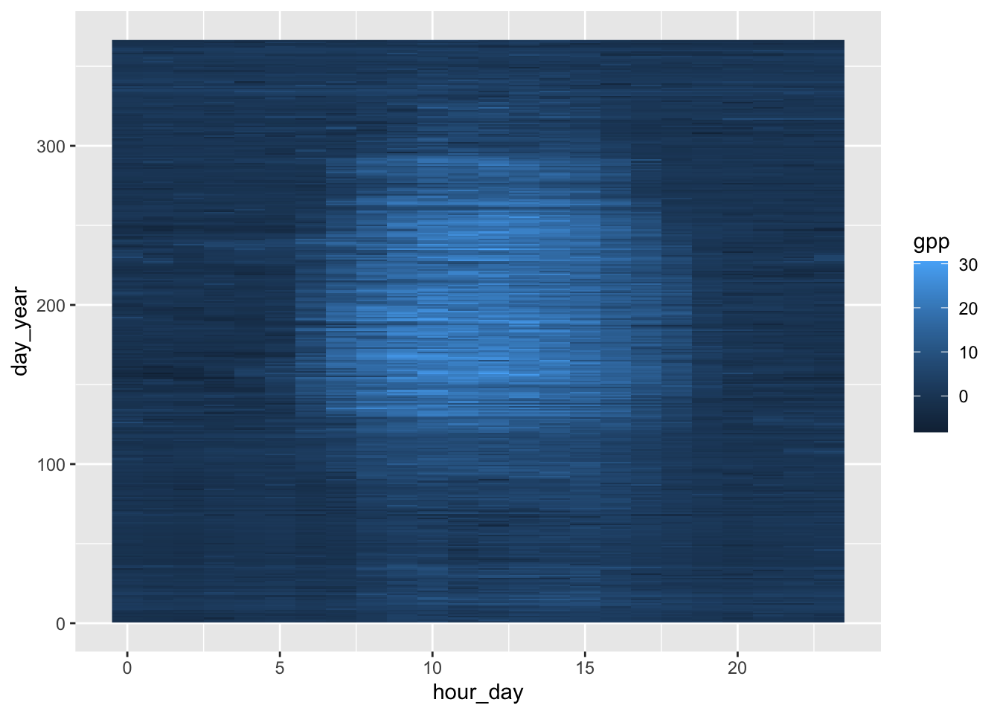
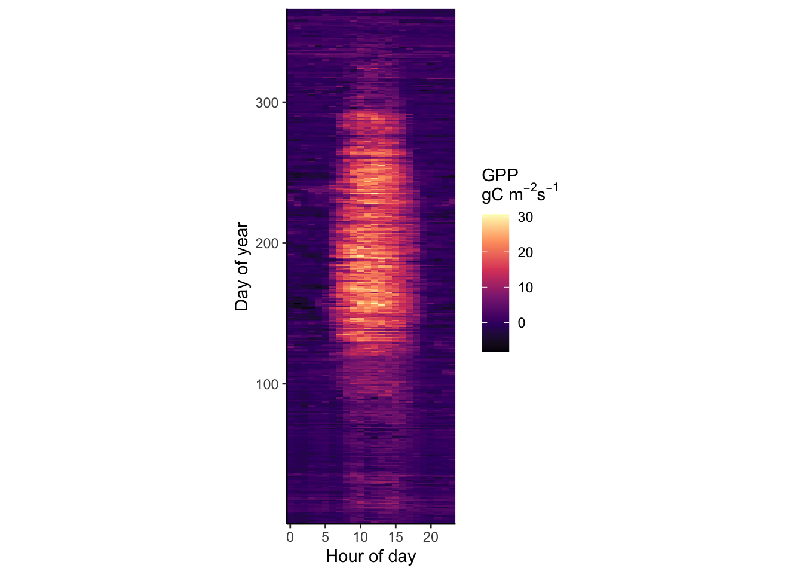
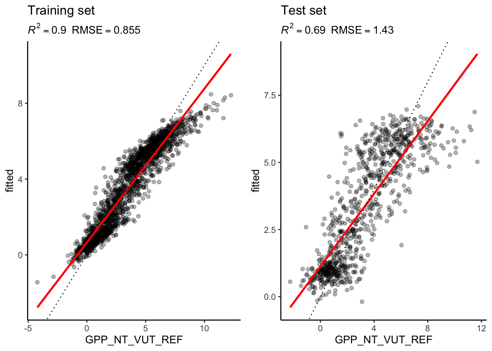

Chapter 12 Solutions
12.1 Chapter 01 - Getting Started
12.1.1 Magic Trick
magic_trick <- function(original_value) {
# Check if the argument for original_value is a numeric value
if (!is.numeric(original_value)) stop("Error: Input is not a numeric value.")
# Check if the argument for original_value is an integer
if (round(original_value) != original_value) stop("Error: Input is not an integer.")
# Check if original value is between 1 and 20
if (original_value < 1 | original_value > 20) stop("Error: Input is outside of 1 and 20.")
# Define temporary variable
tmp <- original_value + 1
tmp <- tmp * 2
tmp <- tmp + 4
tmp <- tmp / 2
final_value <- tmp - original_value
cat("The original value was: ", original_value, "\n",
"The final value is: ", final_value, "\n")
}Let’s try out some false input arguments to see, if our function correctly captures them and reports back what is wrong:
magic_trick("7") ## Error in magic_trick("7") : Error: Input is not a numeric value.
## 2. stop("Error: Input is not a numeric value.")
## 1. magic_trick("7")magic_trick(7.5) ## Error in magic_trick(7.5) : Error: Input is not an integer.
## 2. stop("Error: Input is not an integer.")
## 1. magic_trick("7")magic_trick(77) ## Error in magic_trick(77) : Error: Input is outside of 1 and 20.
## 2. stop("Error: Input is outside of 1 and 20.")
## 1. magic_trick(77)And now let us test, whether the magic trick works:
magic_trick(1)## The original value was: 1
## The final value is: 3magic_trick(7)## The original value was: 7
## The final value is: 3magic_trick(11)## The original value was: 11
## The final value is: 3magic_trick(20)## The original value was: 20
## The final value is: 312.2 Chapter 02 - Primers
12.2.1 Loops using for and while
# 1a. for-loop to compute sum from 1 - 100
sum <- 0
for (i in seq(100)) sum <- sum + i # for-loop iterating from 1 to 100
print(sum)## [1] 5050# 1b. while-loop to compute sum from 1 - 100
loop_status <- TRUE
counter <- 0
sum <- 0
while (loop_status) { # while-loop is repeated as long as loop_status is true
counter <- counter + 1
sum <- sum + counter
if (counter == 100) loop_status <- FALSE
}
print(sum)## [1] 505012.2.2 Add up all numbers that are multiples of 3 and 7
sum <- 0
for (i in seq(100)) {
if (i %% 3 == 0 && i %% 7 == 0 ) {
sum <- sum + i
}
}
print(paste0("The sum is of multiples of 3 and 7 within 1-100 is: ", sum))## [1] "The sum is of multiples of 3 and 7 within 1-100 is: 210"12.2.3 Define and interpolate vector
# Using a for-loop to identify first and last position of NA values
vec <- array(NA,c(100)) # Initiate vector of length 100 with NAs
vec[1:25] <- 6 # Fill up first 25 elements of 'vec' with value 6.
vec[66:100] <- -20 # Fill up elements 66:100 with value -20.
for (i in 2:99) { # for-loop iterating from 2 to 99
# NOTE: The reason we loop between 2 and 99 is because we need to compare
# neighboring positions to find the transition from entries with number to
# entries with NA (i-1, i, i + 1). Positions 0 and 101 are not defined
# in our vector and thus lead to an error when trying to access.
# Find last defined value
# Requires: Current position i is not NA but the next one is
if (!is.na(vec[i]) && is.na(vec[i+1])) last_non_na <- i
# Find first defined value
# Requires: Previous position is NA but not the current one
if (!is.na(vec[i]) && is.na(vec[i-1])) first_non_na <- i
}
# Get the increment that is needed for interpolation
last_value <- vec[last_non_na] # Last non-NA value
first_value <- vec[first_non_na] # First non-NA value
delta <- (last_value - first_value) / (last_non_na - first_non_na) # Change in y over change in x
for (i in 2:length(vec)) { # If loop iterating from 2 to length of vec
# If position is NA, replace it by previous value plus increment
if (is.na(vec[i])) vec[i] <- vec[i-1] + delta
}
# Create plot
# Intrinsic function 'plot' requires the following arguments:
# 1st argument: vecor of x-values
# 2nd argument: vecor of y-values (must be of same length as x-value vector)
plot(seq(length(vec)),
vec,
type = "l",
main = "Interpolated vector using for-loop")
# Using a while-loop to identify first and last position of NA values
vec <- array(NA,c(100)) # Initiate vector of length 100 with NAs
vec[1:25] <- 6 # Fill up first 25 elements of 'vec' with value 6.
vec[66:100] <- -20 # Fill up elements 66:100 with value -20.
last_non_na <- 1
is_defined <- TRUE
while (is_defined){ # Search last element defined before gap and store its position
if (is.na(vec[last_non_na+1])){
is_defined <- FALSE
} else {
last_non_na <- last_non_na+1
}
}
# One may omit the boolean variable 'defined' and directly write:
last_non_na <- 1
while (!is.na(vec[last_non_na+1])) last_non_na <- last_non_na + 1
# Search first element defined after gap and store its position
first_non_na <- last_non_na + 1
while (is.na(vec[first_non_na])) first_non_na <- first_non_na + 1
# Get the increment that is needed for interpolation
last_value <- vec[last_non_na] # Last non-NA value
first_value <- vec[first_non_na] # First non-NA value
delta <- (last_value - first_value) / (last_non_na - first_non_na) # Change in y over change in x
for (i in 2:length(vec)) { # If loop iterating from 2 to length of vec
# If position is NA, replace it by previous value plus increment
if (is.na(vec[i])) vec[i] <- vec[i-1] + delta
}
# Create plot
plot(seq(length(vec)),
vec,
type = "l",
main = "Interpolated vector using while-loop")
12.2.4 Find the sum of the values per column
values <- matrix(c(1,2,3,4,5,6), nrow = 2 ,ncol = 3)
cat("Dataframe: \n \n")## Dataframe:
## values## [,1] [,2] [,3]
## [1,] 1 3 5
## [2,] 2 4 6# Initialize the sums of the columns to zero
col_sum <- rep(0,ncol(values))
cat("\n Initial vector col_sum: ", col_sum)##
## Initial vector col_sum: 0 0 0# Iterate over the columns
for (j in 1:ncol(values)){
#iterate over the rows for each column
for (i in 1:nrow(values)){
#calculate the sum of the jth column by adding the values of each row (of the jth column)
col_sum[j] <- col_sum[j] + values[i,j]
}
}
cat("\n Final vector col_sum: ", col_sum)##
## Final vector col_sum: 3 7 1112.3 Chapter 03 - Data Wrangling
12.3.1 Tidyverse exercises
# a.
dplyr::starwars |> dplyr::filter(skin_color == "pale", homeworld == "Naboo" | homeworld == "Ryloth") |> nrow() ## [1] 2# b.
dplyr::starwars |> unnest_wider(starships) |> filter_at(vars(contains("...")), all_vars(!is.na(.))) ## # A tibble: 1 × 18
## name height mass hair_…¹ skin_…² eye_c…³ birth…⁴ sex gender homew…⁵
## <chr> <int> <dbl> <chr> <chr> <chr> <dbl> <chr> <chr> <chr>
## 1 Obi-Wan Ken… 182 77 auburn… fair blue-g… 57 male mascu… Stewjon
## # … with 8 more variables: species <chr>, films <list>, vehicles <list>,
## # ...1 <chr>, ...2 <chr>, ...3 <chr>, ...4 <chr>, ...5 <chr>, and abbreviated
## # variable names ¹hair_color, ²skin_color, ³eye_color, ⁴birth_year,
## # ⁵homeworld# c.
dplyr::starwars |> unnest(starships) |> filter(films == "Return of the Jedi") |> top_n(-1, height) |> select(name, starships) ## # A tibble: 1 × 2
## name starships
## <chr> <chr>
## 1 Nien Nunb Millennium Falcon12.3.2 Aggregation of data in tidy style
# Load and wrangle the hhdf dataset
hhdf <- read_csv("data/FLX_CH-Lae_FLUXNET2015_FULLSET_HH_2004-2006.csv") |>
dplyr::select(
starts_with("TIMESTAMP"),
ends_with("_F"),
GPP_NT_VUT_REF,
NEE_VUT_REF_QC,
starts_with("SWC_F_MDS_"),
-contains("JSB"),
NIGHT
)## Rows: 52608 Columns: 235
## ── Column specification ────────────────────────────────────────────────────────
## Delimiter: ","
## dbl (235): TIMESTAMP_START, TIMESTAMP_END, TA_F_MDS, TA_F_MDS_QC, TA_ERA, TA...
##
## ℹ Use `spec()` to retrieve the full column specification for this data.
## ℹ Specify the column types or set `show_col_types = FALSE` to quiet this message.# Get different statistics for VPD_F
hhdf |>
mutate(date_time = lubridate::ymd_hm(TIMESTAMP_START),
date = lubridate::date(date_time)) |>
group_by(date) |>
summarise(VPD_F_mean = mean(VPD_F),
VPD_F_median = median(VPD_F),
VPD_F_min = min(VPD_F),
VPD_F_max = max(VPD_F),
VPD_F_sd = sd(VPD_F)) |>
head()## # A tibble: 6 × 6
## date VPD_F_mean VPD_F_median VPD_F_min VPD_F_max VPD_F_sd
## <date> <dbl> <dbl> <dbl> <dbl> <dbl>
## 1 2004-01-01 0.865 0.699 0.558 1.59 0.309
## 2 2004-01-02 0.911 0.833 0.601 1.29 0.211
## 3 2004-01-03 1.03 0.933 0.769 1.56 0.254
## 4 2004-01-04 1.12 0.976 0.788 1.80 0.317
## 5 2004-01-05 0.962 0.919 0.798 1.23 0.124
## 6 2004-01-06 1.33 1.16 0.932 2.40 0.39412.3.3 Temporal pattern of gap-filled data
# Create the two datasets
hhdf_low_quality <- hhdf |> filter(NEE_VUT_REF_QC != 0)
hhdf_high_quality <- hhdf |> filter(NEE_VUT_REF_QC == 0)
# Calculate means
mean_full_df <- mean(hhdf$GPP_NT_VUT_REF)
mean_low_quality <- mean(hhdf_low_quality$GPP_NT_VUT_REF)
mean_high_quality <- mean(hhdf_high_quality$GPP_NT_VUT_REF)
cat("\n GPP mean values of: full --- low quality --- high quality datasets \n",
mean_full_df, "---", mean_low_quality, "---", mean_high_quality)##
## GPP mean values of: full --- low quality --- high quality datasets
## 4.204388 --- 3.055437 --- 7.513288# Relationship between data quality and time
# Save hour of day (hod) in separate variable
hhdf |>
# Turn numeric time into time-object
mutate(date = lubridate::ymd_hm(TIMESTAMP_START),
hod = lubridate::hour(date)) |>
dplyr::group_by(hod) |>
nest() |>
mutate(QC_meas = purrr::map_dbl(data, ~. |> dplyr::filter(NEE_VUT_REF_QC == 0) |> nrow()),
QC_fill = purrr::map_dbl(data, ~. |> dplyr::filter(NEE_VUT_REF_QC != 0) |> nrow())) |>
pivot_longer(cols = c("QC_meas", "QC_fill"),
names_to = "qc_flag",
values_to = "qc_value") |>
mutate(qc_flag = as.factor(qc_flag)) |>
ggplot() +
aes(x = hod, y = qc_value) +
geom_line() +
geom_col() +
facet_wrap(~qc_flag) +
labs(title = "Temporal patterns of gap-filled GPP data",
subtitle = "Gap-filled data applies more often to night-time measurements!",
x = "Hour of Day",
y = "Count of quality flags")
12.4 Chapter 04 - Data Visualisation
12.4.1 Identifying Outliers
# 1. Identify Outliers
# Load packages
library(tidyverse)
library(lubridate) # not part of the automatic load of tidyverse
# read half-hourly data
hhdf <- read_csv("data/FLX_CH-Lae_FLUXNET2015_FULLSET_HH_2004-2006.csv") |>
# interpret -9999 as missing value
na_if(-9999) |>
# interpret timestamp as a date-time object
mutate_at(vars(starts_with("TIMESTAMP_")), ymd_hm)## Rows: 52608 Columns: 235
## ── Column specification ────────────────────────────────────────────────────────
## Delimiter: ","
## dbl (235): TIMESTAMP_START, TIMESTAMP_END, TA_F_MDS, TA_F_MDS_QC, TA_ERA, TA...
##
## ℹ Use `spec()` to retrieve the full column specification for this data.
## ℹ Specify the column types or set `show_col_types = FALSE` to quiet this message.# aggregate to daily
ddf <- hhdf |>
# create a date-only object
mutate(date = as_date(TIMESTAMP_START)) |>
# aggregate
group_by(date) |>
summarise(GPP_NT_VUT_REF = mean(GPP_NT_VUT_REF, na.rm = TRUE),
PPFD_IN = mean(PPFD_IN, na.rm = TRUE),
.groups = 'drop' # not mandatory
)
# fit linear regression
linmod <- lm(GPP_NT_VUT_REF ~ PPFD_IN, data = ddf)
# get box plot statistics for determining "outlying" points
out_boxplot <- boxplot.stats(linmod$residuals)
# record the row numbers of outlying points based on the output list element 'out'
# row numbers are the names of elements in out_boxplot$out, provided as strings.
# convert them to integers.
idx_outlying <- names(out_boxplot$out) |> as.integer()
# 2. Remove Outliers
# In base-R, this could be done as:
ddf$GPP_NT_VUT_REF_clean <- ddf$GPP_NT_VUT_REF
ddf$GPP_NT_VUT_REF_clean[idx_outlying] <- NA
# In tidyverse style:
ddf <- ddf |>
mutate(rownumber = row_number()) |> # could also do: mutate(rownumber = 1:nrow(.))
mutate(GPP_NT_VUT_REF_clean = ifelse(rownumber %in% idx_outlying, NA, GPP_NT_VUT_REF))
## 3. Create scatterplot
ddf |>
ggplot(aes(x = PPFD_IN)) +
geom_point(aes(y = GPP_NT_VUT_REF), color = "red") + # first, plot all points including outliers in one color
geom_point(aes(y = GPP_NT_VUT_REF_clean), color = "black") # then overplot cleaned data in black so that remaining red points are outliers## Warning: Removed 265 rows containing missing values (`geom_point()`).## Warning: Removed 290 rows containing missing values (`geom_point()`).
12.4.2 Diurnal and seasonal cycles
## a. Half-hourly dataset
hhdf_meanseason <-
hhdf |>
mutate(hour_day = hour(TIMESTAMP_START),
day_year = yday(TIMESTAMP_START)) |>
group_by(hour_day, day_year) |>
summarise(gpp = mean(GPP_NT_VUT_REF, na.rm = TRUE))## `summarise()` has grouped output by 'hour_day'. You can override using the
## `.groups` argument.## b. Raster plot
hhdf_meanseason |>
ggplot(aes(x = hour_day, y = day_year, fill = gpp)) +
geom_raster()
## c. Make raster plot publishable - This is up to your judgement. Below is an example.
library(viridisLite)
hhdf_meanseason |>
# as above
ggplot(aes(x = hour_day, y = day_year, fill = gpp)) +
geom_raster() +
# use a color scale that works also for color-blind people
scale_fill_viridis_c(option = "magma") +
## change theme (axes style)
theme_classic() +
# adjust the aspect ratio of the plotting region
coord_fixed(ratio=0.2) +
# labels of each mapping axis, \n is a line break
labs(x = "Hour of day",
y = "Day of year",
fill = expression(paste("GPP \ngC m"^-2, "s"^-1))) +
# avoid adding distance from the lowest values to the axes
scale_x_continuous(expand = c(0,0)) + scale_y_continuous(expand = c(0,0))
12.8 Chapter 08
12.8.1 Warm-up Exercises
12.8.1.1 Loops and Ifs
A <- matrix(c(6, 7, 3, NA, 15, 6, 7,
8, 9, 12, 6, 11, NA, 3,
9, 4, 7, 3, 21, NA, 6,
7, 19, 6, NA, 15, 8, 10),
nrow = 4, byrow = TRUE)
B <- c(8, 4, 12, 9, 15, 6)12.8.1.2 Finding best predictor
df <- read_csv("df_for_stepwise_regression.csv")## Rows: 18993 Columns: 17
## ── Column specification ────────────────────────────────────────────────────────
## Delimiter: ","
## chr (1): siteid
## dbl (15): TA_F, SW_IN_F, LW_IN_F, VPD_F, PA_F, P_F, WS_F, TA_F_MDS, SW_IN_F...
## date (1): TIMESTAMP
##
## ℹ Use `spec()` to retrieve the full column specification for this data.
## ℹ Specify the column types or set `show_col_types = FALSE` to quiet this message.## specify target variable
target <- 'GPP_NT_VUT_REF'
## determine predictors as all except site ID, timestamp, and the target (should be 14)
preds <- df |>
dplyr::select(-target, -siteid, -TIMESTAMP) |>
names()## Warning: Using an external vector in selections was deprecated in tidyselect 1.1.0.
## ℹ Please use `all_of()` or `any_of()` instead.
## # Was:
## data %>% select(target)
##
## # Now:
## data %>% select(all_of(target))
##
## See <https://tidyselect.r-lib.org/reference/faq-external-vector.html>.## initialise an empty data frame (necessary, because otherwise we cannot use bind_rows() below)
df_rsq <- data.frame()
# rsq_list <- c() # alternative for vector
for (var in preds){
## create formula dynamically
forml <- as.formula(paste(target, "~", var))
## fit linear model
fit_lin <- lm(forml, data = df)
## extract R2 from linear model
rsq <- summary(fit_lin)[["r.squared"]]
## add a row to the data frame that holds the results
df_rsq <- bind_rows(df_rsq, data.frame(pred = var, rsq = rsq))
# rsq_list <- c(rsq_list,rsq) # alternative with vector
}
## print a table arrange by best rsq at the top
df_rsq |> arrange(-rsq) |> knitr::kable()| pred | rsq |
|---|---|
| PPFD_IN | 0.4554005 |
| SW_IN_F | 0.4444347 |
| SW_IN_F_MDS | 0.4444190 |
| TA_F | 0.4087793 |
| TA_F_MDS | 0.4087575 |
| VPD_F | 0.2026442 |
| VPD_F_MDS | 0.1919383 |
| LW_IN_F | 0.1822284 |
| LW_IN_F_MDS | 0.1303948 |
| CO2_F_MDS | 0.0342863 |
| P_F | 0.0030827 |
| WS_F | 0.0010247 |
| PA_F | 0.0002001 |
| USTAR | 0.0000813 |
## alternative: determine the first variable to enter into our model
# preds[which.max(rsq_list)]
## use the data frame that holds the results for plotting
df_rsq |>
ggplot(aes(x = reorder(pred, rsq), y = rsq)) +
geom_bar(stat = "identity") +
labs(y = expression(italic(R)^2), x = "Variable") +
coord_flip()